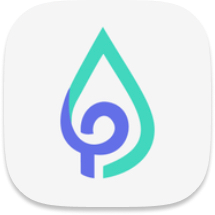
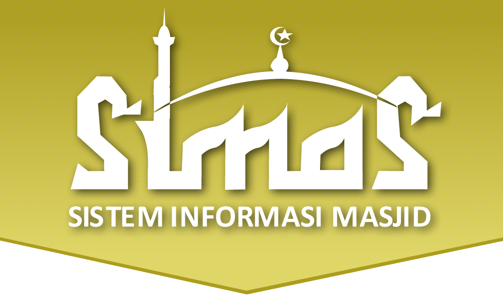

Informasi Berkala
Update informasi terbaru seputar Kementerian Agama Provinsi Riau

Teknologi
2 jam yang lalu
Inovasi Terbaru di Dunia AI Mengubah Cara Kerja Perusahaan
Perusahaan teknologi terkemuka meluncurkan platform AI baru yang diklaim dapat meningkatkan produktivitas hingga.....
Teknologi
2 jam yang lalu
Inovasi Terbaru di Dunia AI Mengubah Cara Kerja Perusahaan
Perusahaan teknologi terkemuka meluncurkan platform AI baru yang diklaim dapat meningkatkan produktivitas hingga.....
Informasi Serta Merta Berkala
1. Struktur Organisasi PPID Kemenag Riau 2. Tugas dan Wewenang PPID 3. Rencana Kerja dan Rencana Strategis 4. Sejarah dan Tujuan PPID 5. Rencana Umum Pengadaan 6. Informasi data Kementerian Agama Provinsi Riau 7. Daftar Informasi Publik 8. Info Nikah 9. Info Haji 10. Info Bimas Islam 11. Info Pendidikan 12. Info Kepegawaian Lihat Semua InformasiAplikasi Kemenag
Aplikasi pelayanan Kementerian Agama Provinsi Riau
Web Utama

Pusaka

Halal
LPSE
